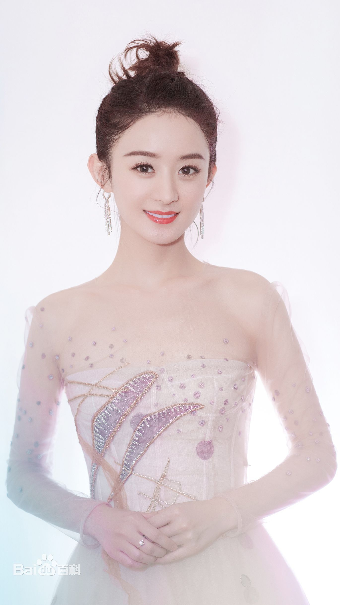

赵丽颖
赵丽颖，1987年10月16日出生于河北省廊坊市，中国内地女演员、歌手，河北省旅游形象大使。
演艺经验
- 2006年5月，参加由雅虎网、浙江卫视、华谊兄弟联合主办的《雅虎搜星》比赛，获得冯小刚组的冠军，从而正式进入演艺圈。
- 2008年，在民国情感剧《锁清秋》中饰演聪明机灵的丫鬟文雁。
- 2009年1月，主演数字电影《爱杀九河堂》。
- 2010年1月，主演年代剧《锣鼓巷》，饰演少女时期的李秋萍。
- 2011年，与徐峥联袂主演古装剧《大内低手》，在剧中饰演善良可爱的陈馨儿，这也是她首次参演喜剧类型的电视剧 ；同年，签约海润影视集团；7月16日，在古装爱情剧《新还珠格格》中饰演甜美端庄、深明大义的晴格格。
- 2012年10月，出演都市情感剧《极品男女日记》，在剧中饰演活力四射的都市女孩楚扬；同年，在古装爱情剧《宫锁珠帘》中饰演冷艳大方的十九福晋百合 。
- 2013年5月5日，赵丽颖主演的古装励志剧《陆贞传奇》上映，她在剧中饰演聪明睿智的一代女相陆贞。
- 2014年2月，主演古装励志剧《错点鸳鸯·戏点鸳鸯》，成绩均位居省网第一，同年，获得“金鹰女神”称号。
成就与奖励
- 2020-10-18 第30届中国电视金鹰奖观众喜爱的女演员
- 2020-9-15 第30届中国电视金鹰奖最佳女演员
- 2019-11-8 第26届华鼎奖中国古装题材电视剧最佳女主角
- 2019-5-23 第25届上海电视节-白玉兰奖最佳女主角奖
- 2017-12-18 第8届澳门国际电视节最佳女演员奖
- 2017-05-26 第24届北京大学生电影节最受大学生欢迎女演员奖
- 2016-10-16 第28届中国电视金鹰奖观众喜爱的女演员奖
- 2016-5-20 第22届上海电视节-白玉兰奖最佳女主角奖
- 2016-04-28 第19届华鼎奖中国古装题材电视剧最佳女演员奖
- 2016-04-28 第19届华鼎奖中国当代题材电视剧最佳女演员奖
- 2015-12-13 第6届澳门国际电视节最佳女主角奖
主要作品
| 电视剧 |
电影 |
| 陆贞传奇 |
西游记女儿国 |
| 杉杉来了 |
密战 |
| 知否知否 |
乘风破浪 |
| 青云志 |
我们的十年 |
| 花千骨 |
女汉子真爱公式 |
| 楚乔传 |
宫锁沉香 |
| 胭脂 |
一路惊喜 |
| 新还珠格格 |
极限挑战 |
| 你和我的倾城时光 |
六年，六天 |
>
生活照

早年经历
1987年10月16日（农历八月二十四），赵丽颖出生于河北廊坊市的一个普通家庭，祖辈为农民，她亦出身于农村，而农村的生活经历，则磨练出了她坚强的意志，也造就了其坚韧顽强的个性。
小时候的赵丽颖就特别喜欢看别人演戏，也幻想自己有一天能够成为演员，可她的父亲只是一名派出所民警，母亲也只是在百货商店从事销售员一职，家中完全没有门路也没有一定的经济条件去支持她实现儿时的梦想。
长大后，赵丽颖考入了廊坊市电子信息工程学校空乘专业，但毕业后的她却由于家庭经济条件的限制，不得不放弃投考空姐的机会。而只能选择在自家附近的管道防腐公司做销售工作。